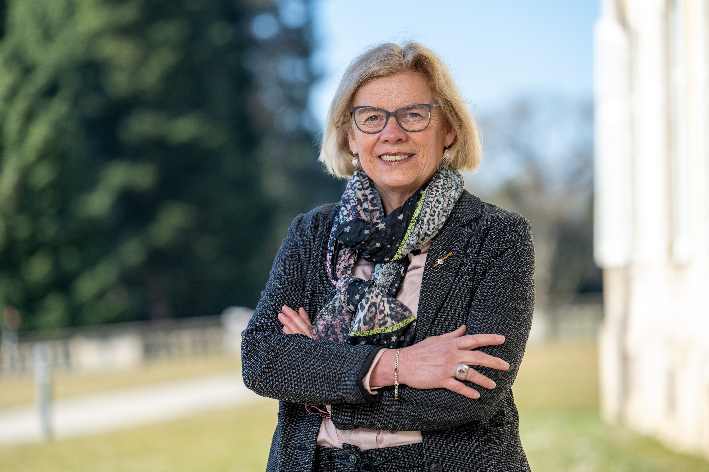

Künstlerin

BERUFLICHER UND PERSÖNLICHER WERDEGANG 1959 in Stuttgart geboren, in Esslingen aufgewachsen und zur Schule gegangen, nahm ich nach dem Abitur das Studium der Rechtswissenschaften in Heidelberg auf, wo ich 1984 das erste juristische Staatsexamen ablegte. Es folgte das Referendariat im Landgerichtsbezirk Stuttgart und 1987 das zweite juristische Staatsexamen. 1990 und 1993 Geburt meiner beiden Kinder. Nach der Tätigkeit als Juristin in einem Unternehmen der Wohnungswirtschaft und der Tätigkeit als freie Mitarbeiterin in einer Rechtsanwaltskanzlei in Esslingen war ich seit November 2003 bis Ende 2025 an der Universität Hohenheim am Lehrstuhl für Bankwirtschaft und Finanzdienstleistungen beschäftigt. 2012 übernahm ich dort die Leitung des Redaktionsbüros einer wissenschaftlichen Zeitschrift. 2004 bis 2014 war ich im Vorstand des Esslinger Kunstvereins, von 2023 bis zur Umwandlung des Fördervereins in einen Trägerverein im Jahr 2025 im Vorstand des Fördervereins der Esslinger Kunstakademie tätig. KÜNSTLERISCHER WERDEGANG 1995 habe ich mich an der Kunstakademie Esslingen eingeschrieben. Nach anfänglichen Studien mit Bleistift, Kohle, Rötel und Aquarellfarben, widmete ich mich insbesondere der abstrakten Malerei. Neben diversen Workshops (unter anderen freie Interpretation der Landschaft, Mischtechnik, aleatorische Verfahren) unternahm ich auch mehrtägige Studienreisen in das In- und Ausland. In den Jahren 2002–2005 nahm ich an verschiedenen Intensivseminaren für experimentelle Malerei bei Prof. Rolf Loch teil. Hier wandte ich mich zunächst mit Eitemperafarben und Acrylfarben der freien Malerei zu. Später kam die Anfertigung von Monotypien und Lithographien hinzu. Seit 2020 bilde ich mich regelmäßig durch mehrtägige Seminare zum Thema „freie Abstraktion und Technik“ bei Ran-Sou Shin von der Heyden, insbesondere in der Fabrik am See (Akademie für zeitgenössische Kunst in Horn am Bodensee) und in der Kunstakademie Römerstein fort. AUSSTELLUNGEN 1999 Gemeinschaftsausstellung Rechtsanwaltskanzlei ZFZ Esslingen 2000 Ausstellung Forum Heppächer, Esslingen 2003 Ausstellung Karstadt, Kultur Live, Esslingen 2004 Einzelausstellung Gemeinschaftspraxis „Schelztor 42“ in Esslingen 2004 Einzelausstellung Rechtsanwaltskanzlei Ratajzak und Partner, Sindelfingen 2005 Einzelausstellung Psychotherapeutische Fortbildungsstelle, Stuttgart 2005 Gruppenausstellung Werkstattgalerie Prof. Rolf Loch, Uhingen 2010 bis heute Dauerausstellung am Lehrstuhl für Bankwirtschaft, Uni Hohenheim 2012 Einzelausstellung Klinik Stuttgart-Bad Cannstatt, Abt. Physiotherapie 2014 Gemeinschaftsausstellung Krankenpflegeverein Nellingen 2015 Gemeinschaftsausstellung „Kunst in Leinfelden-Echterdingen“ 2015 Gemeinschaftsausstellung im „Steiner am Fluss“ in Plochingen


Email: barbara.speh-freidank@gmx.de